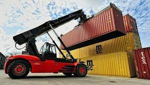
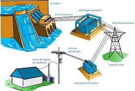
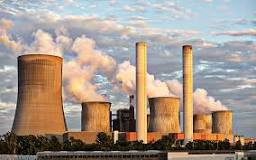
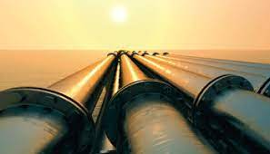

Movimento de veículos e máquinas:
A energia mecânica é fundamental para a utilização de maquinários bem como o funcionamento de usinas de energia de diversos modods, sendo o mais conhecido a rotação dos prótons dentro de dínamos presentes nas turbinas eólicas.

Geração de eletricidade:
pode ser utilizada em usinas hidrelétricas, termelétricas e eólicas para gerar eletricidade. Em usinas hidrelétricas, por exemplo, a energia mecânica da água em movimento é convertida em energia elétrica por meio de turbinas e geradores.

Indústria:
é amplamente utilizada na indústria para operar máquinas e equipamentos, como prensas, serras, guindastes, transportadores e demais ferramentas.

Construção civil:
ela é essencial para a execução de obras de construção civil, sendo utilizada em máquinas como escavadeiras, tratores, betoneiras, guindastes, entre outras.
Agricultura:
representa um papel importante na agricultura, sendo empregada em tratores, colheitadeiras, pulverizadores, irrigadores e demais equipamentos agrícolas.
Transporte de fluidos:
tambem é utilizada em sistemas de bombeamento para transportar fluidos como água, óleo, gás e produtos químicos por meio de tubulações e encanamentos.
